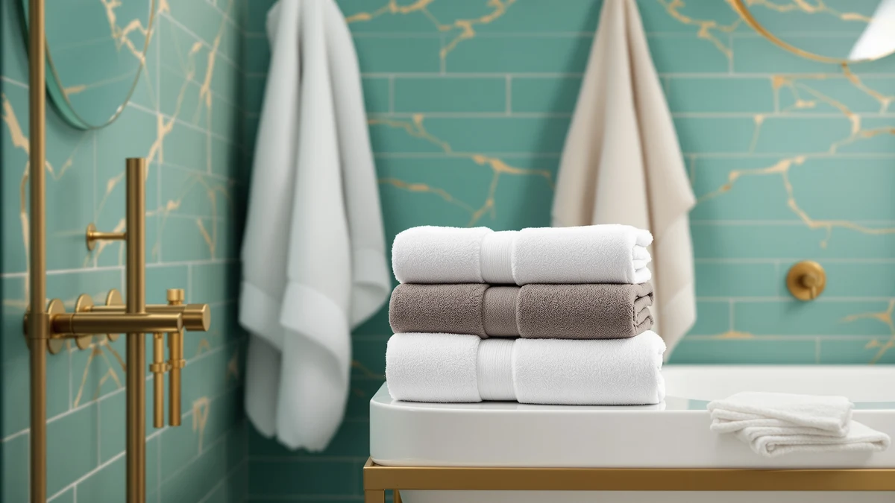

Best Bath Towels for Home (2026)
Prices and picks verified as of August 2026. Independent, reader-supported reviews.


Quick Answer
The best bath towels for home use come down to absorbency, fabric weight, and price across daily use rather than how a set looks folded on a shelf. The HOMEXCEL Grey Bath Towels 2 comes out on top at $12.99, a microfiber two-pack sized for regular rotation without the cost of a full household set. If you're stocking more than one bathroom at once, the six-piece Utopia Towels set spreads that same value across a full household.
Our pick: HOMEXCEL Grey Bath Towels 2, $12.99 Check Price on Amazon
Bottom line: our top pick is the HOMEXCEL Grey Bath Towels 2 Pack at $13.99. The best budget option is the CandyHome 12 PCS Baby Bath Towels Set for Infants Toddlers at $24.99.
Things to Know Before You Buy
- Set size matters more than plushness. A single premium towel doesn't support a real household rotation, which matters most when you're shopping for the best bath towels for home use rather than one showpiece towel.
- Cotton and microfiber solve different problems. Cotton absorbs more per pass and feels heavier on skin, while microfiber dries faster and takes up less closet space. Household size and laundry frequency should decide which one you buy.
- Price per towel beats price per set. A $33.99 six-pack works out to about $5.67 per towel, while a $36.99 four-pack runs closer to $9.25 per towel, even though the four-pack looks cheaper as a single line item.
- Skip the fabric softener. It coats cotton and microfiber fibers alike and cuts the absorbency a bath towel is bought for in the first place.
- Weight affects drying time as much as size does. A heavier towel feels more substantial out of the dryer but takes longer to air-dry between washes, which matters if you only own one or two sets per person.
Finding the best bath towels for home use comes down to how much water a towel actually absorbs, how it holds up wash after wash, and what it costs per towel once you need enough for a full household. A towel that looks great folded on a shelf but thins out after ten washes solves a decorating problem, not a daily one.
We compared seven picks with that daily-use case in mind, weighing fabric, price per towel, and set size rather than chasing the plushest or most photogenic option. Among the best bath towels for home use, the HOMEXCEL Grey Bath Towels 2 comes out on top: a $12.99 microfiber two-pack sized at 27 by 54 inches, priced low enough to buy more than one set without a second thought.
For a lighter, faster-drying option, the microfiber HOMEXCEL Waffle Bath Towels Set works well in a smaller bathroom or guest space. Budget shoppers should start with the CandyHome twelve-piece set, and anyone who prefers a heavier all-cotton feel can step up to the Casa Platino eight-piece set or the ring-spun Infinitee Xclusives four-pack. Every pick below explains who it fits best, and our towel care guide covers how to keep any of them soft for longer.
Why You Should Trust Us
I've spent years covering bath and home textiles, and outfitting a home with everyday bath towels raises a different question than picking one showpiece set: which towels hold up to years of regular washing without falling apart or losing absorbency. For this guide to the best bath towels for home use, I focused on fabric, set size, and price per towel rather than which set photographs best on a shelf.
We earn a commission if you buy through the links on this page, but that doesn't decide which towels make this list. Every pick here is something I'd recommend to someone stocking a bathroom from scratch, and we do not run a fake testing lab.
How We Picked
We started by looking at what makes the best bath towels for home use rather than a single bathroom accent: fabric needed to hold up to weekly washing rather than the occasional wash a decorative towel gets, and set size needed to support more than one household member at a time. We compared cotton and microfiber options side by side, since each solves a different part of the everyday-towel problem, absorbency against dry time, and spread price across the guide so a real budget option sits alongside heavier all-cotton sets.
We also weighted set size and price per towel heavily. A single towel doesn't support a full household, since a towel that's still drying can't go back on the rack the next morning, so most of the picks below come in packs of two or more to make rotation realistic.
How We Compared
We built this guide from specs, pricing, and verified owner reviews. We do not run a fake testing lab, so every comparison below is grounded in what matters for the best bath towels for home use: documented material (cotton, cotton blend, or microfiber), listed dimensions, and price per towel, cross-checked against verified reviews. We read closely for mentions of home, everyday, or daily use, along with any pattern of complaints about thinning, shedding, or lost absorbency after repeated washing.
Where reviewers consistently flagged the same issue rather than a single one-off complaint, we noted it in that pick's "Flaws but not dealbreakers" section instead of leaving it out.
Our Picks

HOMEXCEL Grey Bath Towels 2
What we like
- Priced at $12.99, low enough to buy multiple sets for one bathroom
- Microfiber dries faster between washes than an all-cotton towel
- 27 by 54 inch sizing fits most standard towel bars without hanging past the floor
Flaws but not dealbreakers
- A two-towel set won't cover a full household on its own
- Microfiber feels thinner against skin than a heavier all-cotton towel
| Material | Microfiber |
| Size | 27 x 54 Inch |
The HOMEXCEL Grey Bath Towels 2 set earns its spot as our top pick among the best bath towels for home use for one simple reason: it's cheap enough to buy two or three sets and still spend less than a single premium bath sheet. At 27 by 54 inches, it's sized for standard adult use rather than an oversized spa towel, so it fits existing towel bars and hooks without redesigning your bathroom around it.
Microfiber construction means this set dries faster between washes than a comparable cotton towel, which matters if you're doing laundry for more than one person and don't want a towel sitting damp on the rack for a full day. Reviewers consistently note the grey color hides everyday use well between washes, though anyone who prefers the heavier hand-feel of cotton should look at the Casa Platino or Infinitee Xclusives sets further down this list instead.

CandyHome 12 PCS Baby Bath
What we like
- Twelve pieces means you're never short a clean towel during a busy laundry week
- Cotton blend construction is soft against a baby's skin
- Square 31.5 by 31.5 inch sizing works as an all-purpose towel rather than a single-use washcloth
Flaws but not dealbreakers
- Twelve individual pieces mean more items to track and fold than a standard two or six pack
- Cotton blend doesn't absorb quite as much per pass as 100% cotton
| Material | Cotton blend |
| Size | 31.5x31.5in |
The CandyHome 12 PCS Baby Bath set trades a small number of large towels for a large number of mid-size ones: twelve cotton-blend towels at 31.5 by 31.5 inches each for $24.99. That works out to roughly $2.08 per towel, hard to match with a standard two or four-pack, and the higher piece count pays off in a household that burns through towels faster than laundry day, like one with a baby or young kids in the house.
The square sizing makes each piece flexible: big enough to dry off a toddler or wrap around a baby after a bath, but not so large that it's awkward to fold and store twelve of them in a linen closet. The cotton-blend fabric is soft enough for a baby's skin, though owners report it doesn't hold quite as much water per pass as the all-cotton picks in this guide, which matters more for an adult bath towel than a quick towel-off for a small child.

Casa Platino 8 Pcs 100%
What we like
- Eight matching pieces cover bath towels, hand towels, and washcloths in one purchase
- 100% cotton absorbs more per pass than a cotton-blend or microfiber towel
- One matched set means every towel in the bathroom looks and feels the same
Flaws but not dealbreakers
- Buying the full set costs more upfront than adding towels one pack at a time
- 100% cotton takes longer to air-dry between uses than microfiber
| Material | 100% cotton |
| Size | 8 Piece Towel Set |
The Casa Platino 8 Pcs set is a full 100% cotton bundle built for anyone setting up a bathroom from scratch rather than adding a towel or two to an existing rotation. Eight matching pieces mean bath towels, hand towels, and washcloths all come from the same weave and color run, which solves the mismatched-towel problem that comes from buying separate packs over time.
All-cotton construction absorbs more water per pass than the cotton-blend and microfiber picks in this guide, and reviewers consistently describe the feel as heavier and more traditional than a microfiber towel. That heavier weave does mean a longer air-dry time between washes, so this set fits a household with enough closet space to keep a full rotation on hand rather than one washing towels every other day out of necessity.

HOMEXCEL Waffle Bath Towels Set
What we like
- 30 by 60 inch sizing covers more of you than a standard bath towel
- Waffle-weave microfiber dries faster than a comparable all-cotton bath sheet
- Textured weave feels less clingy against skin than smooth microfiber
Flaws but not dealbreakers
- $29.99 for microfiber costs more per towel than the 100% cotton six-packs in this guide
- Waffle texture feels less plush than a traditional terry towel
| Material | Microfiber |
| Size | 30 x 60 Inch |
The HOMEXCEL Waffle Bath Towels Set moves into bath-sheet territory at 30 by 60 inches, priced at $29.99. The waffle-weave microfiber construction is the reason to consider it over a plain microfiber towel of the same size: the textured weave increases surface area for faster drying and feels less clingy against skin than smooth microfiber often does.
That combination of size and quick-dry fabric makes it a practical pick for a smaller bathroom that doesn't have room to hang multiple full-size cotton bath sheets between washes. Owners report the waffle texture holds up well over repeated washing, though anyone who prefers the dense, plush feel of a traditional terry towel should expect this set to feel noticeably different in hand than the 100% cotton picks in this guide.

Bathtub Mat Non Slip 35x16
What we like
- Non-slip backing keeps the mat in place on a tile or vinyl floor
- Cotton blend construction absorbs drips instead of leaving them sitting on the surface
- 34.5 by 15.5 inch sizing fits in front of most standard tubs and showers
Flaws but not dealbreakers
- It's a bath mat, not a bath towel, so it doesn't add to your towel rotation
- Cotton blend mats need more frequent washing than a synthetic bath mat to avoid mildew
| Material | Cotton blend |
| Size | 34.5" x 15.5" (Rectangular) |
The Bathtub Mat Non Slip is the one pick in this guide that isn't a towel at all: a 34.5 by 15.5 inch cotton-blend bath mat priced at $24.99. It's here because a bathroom stocked with the best bath towels for home use usually needs a mat to step onto afterward, and this one pairs a non-slip backing with a cotton-blend surface that absorbs water instead of letting it sit on top.
The rectangular sizing fits in front of a standard tub or shower without hanging over into a walkway, and reviewers consistently mention the non-slip backing staying put on tile floors better than a plain rubber-backed mat. Because it's cotton blend rather than a quick-dry synthetic, it needs regular washing to avoid holding moisture, the same care routine as the towels it's meant to complement.

Infinitee Xclusives Luxury 100% Ring-Spun
What we like
- Ring-spun cotton feels noticeably softer than standard combed cotton
- 100% cotton construction absorbs more per pass than any microfiber or blend option here
- Four-pack sizing works well for a two-person household without excess
Flaws but not dealbreakers
- At $36.99 for four towels, it's the most expensive per-towel pick in this guide
- Heavier ring-spun cotton takes longer to dry than the waffle microfiber set
| Material | 100% cotton |
| Size | Bath Towels - 4 Pack |
The Infinitee Xclusives Luxury set is built from 100% ring-spun cotton, a spinning process that produces a softer, finer thread than standard cotton and shows up immediately in how the towel feels out of the package. At $36.99 for a four-pack, it costs more per towel than every other pick in this guide, and that price reflects the fabric upgrade rather than a larger set size.
Ring-spun cotton also absorbs well, consistent with the other 100% cotton picks here, and owners report the towels hold their softness better over repeated washing than a standard combed-cotton towel typically does. The tradeoff is dry time: a heavier ring-spun weave takes longer to air-dry than the waffle microfiber set, so this pick fits a household with enough towels in rotation to let one dry fully between uses rather than needing it back in service the same day.

Utopia Towels 6 Pack Medium
What we like
- Six towels for $33.99 works out to about $5.67 per towel, the best per-towel price among the 100% cotton picks
- 100% cotton absorbs well and holds up to frequent washing
- Six-piece count supports a full household rotation without laundry gaps
Flaws but not dealbreakers
- 24 by 48 inch sizing runs smaller than the oversized HOMEXCEL waffle set
- Six matching towels cost more upfront as a single purchase than a two-pack
| Material | 100% cotton |
| Size | 24" x 48" - 6 Pack |
The Utopia Towels 6 Pack is the value play among the 100% cotton picks in this guide: six towels for $33.99, which works out to roughly $5.67 per towel, cheaper per towel than the four-pack Infinitee Xclusives set despite using the same 100% cotton material. That math makes it the pick for a household of three or more that needs enough towels on hand to get through a busy week without an extra laundry load.
At 24 by 48 inches, the sizing runs a bit smaller than a full bath sheet, closer to a standard adult bath towel, so it won't wrap around you the way the oversized HOMEXCEL waffle set does. Reviewers consistently point to the six-piece count as the main reason to buy it over a smaller set, since it's the only pick here that outfits an entire family's rotation in a single purchase.
Quick Comparison
| Product | Material | Price | Rating | Best for | Get it |
|---|---|---|---|---|---|
| HOMEXCEL Grey Bath Towels 2 | Microfiber | $12.99 | 4 | Budget everyday pick | View on Amazon → |
| CandyHome 12 PCS Baby Bath | Cotton blend | $24.99 | 4 | Households with a baby or young kids | View on Amazon → |
| Casa Platino 8 Pcs 100% | 100% cotton | 4 | Furnishing a whole bathroom at once | View on Amazon → | |
| HOMEXCEL Waffle Bath Towels Set | Microfiber | $29.99 | 4 | Oversized coverage, faster drying | View on Amazon → |
| Bathtub Mat Non Slip 35x16 | Cotton blend | $24.99 | 4 | Pairing with any towel set here | View on Amazon → |
| Infinitee Xclusives Luxury 100% Ring-Spun | 100% cotton | $36.99 | 4 | Softest feel, worth the upgrade | View on Amazon → |
| Utopia Towels 6 Pack Medium | 100% cotton | $33.99 | 4 | Best value for a full household | View on Amazon → |
How many bath towels do I need for a home?
Most home organizers recommend two to three bath towels per person, enough for one in use and one or two more in the wash.
Is cotton or microfiber better for everyday bath towels?
Cotton absorbs more water per pass and feels heavier and more traditional against skin, while microfiber dries faster and takes up less space in a linen closet.
The Competition
Several towel types didn't make this guide, and the reasons line up with what actually matters for everyday home use rather than a single accent piece.
Oversized luxury bath sheets sold as single towels. Several premium bath sheets looked appealing on fabric alone, but without a multi-pack option they don't support a full household rotation, and buying enough single towels to cover more than one person quickly costs more than a matched set.
Ultra-cheap microfiber bundles. A handful of bargain microfiber packs undercut every pick here on price, but reviewers frequently mentioned thinning and reduced absorbency after only a few washes, which defeats the purpose of a towel meant for daily use.
Decorative towel sets with no size information listed. Some sets emphasized color and pattern over practical specs, and without confirmed dimensions or fabric weight we couldn't compare them fairly against the picks above.
For most households, the HOMEXCEL Grey Bath Towels 2 remains the pick to beat among the best bath towels for home use in 2026, with the Utopia Towels six-pack as the better fit for a larger family.
Frequently Asked Questions
How many bath towels do I need for a home?
Most home organizers recommend two to three bath towels per person, enough for one in use and one or two more in the wash. That's why the best bath towels for home use tend to come in packs of four, six, or more rather than as single towels, since a two-person household alone needs at least four to six in rotation.
Is cotton or microfiber better for everyday bath towels?
Cotton absorbs more water per pass and feels heavier and more traditional against skin, while microfiber dries faster and takes up less space in a linen closet. If you're washing towels for more than two people, microfiber's faster dry time between loads is usually the more practical everyday choice.
How often should I replace bath towels?
Plan on replacing bath towels every two to three years, or sooner if you notice thinning, a musty smell that survives a wash, or reduced absorbency. Skip fabric softener in the meantime, since it coats fibers and speeds up the absorbency loss that eventually forces a replacement.